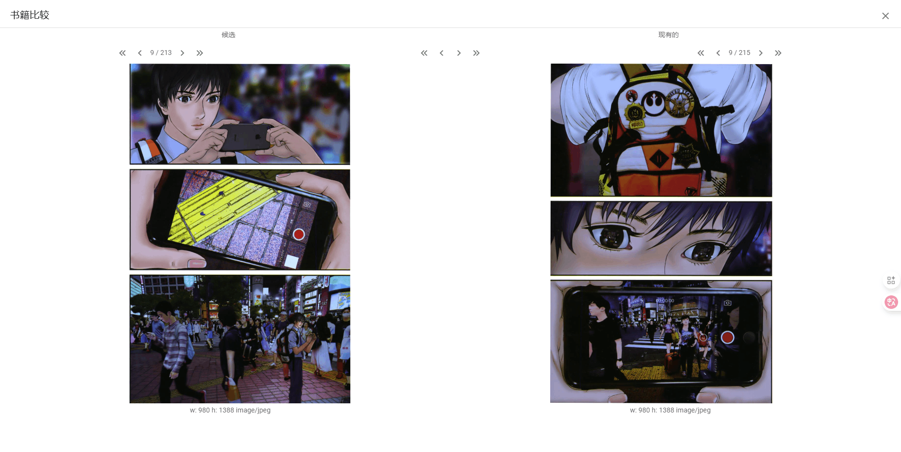
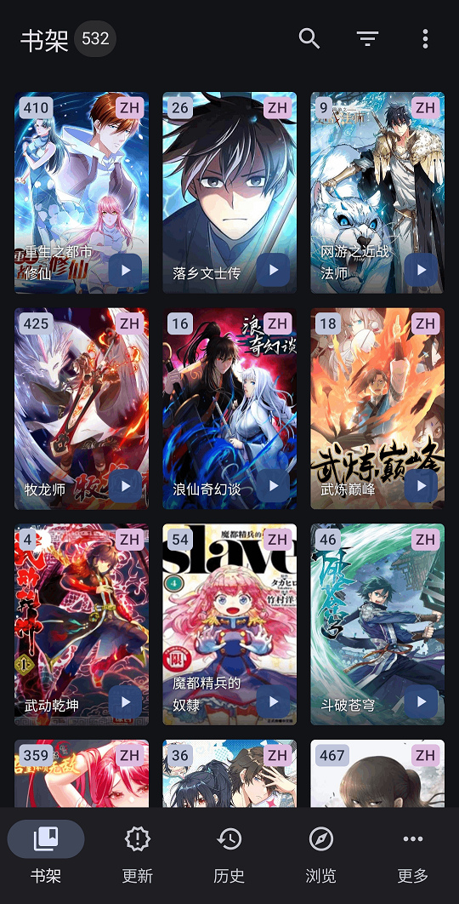

Version：komga v1.15.1
# 介绍
komga 是一个自托管的漫画管理程序，支持常见的 CBZ、CBR、PDF 、EPUB 格式的漫画或文件，可以直接在网页端阅读漫画，并加以修改、编辑漫画的元数据。同时它支持全平台运行，
官网：https://komga.org/
项目地址：https://github.com/gotson/komga/tree/1.15.1
# 安装
为你的 komga 存放创建数据和配置文件夹：
# $PATH 为你存储盘的路径 | ||
mkdir -p /<$PATH>/komga/config /<$PATH>/komga/data |
运行 Docker：
docker pull gotson/komga:latest | ||
docker run -d \ | ||
--name komga \ | ||
-v /<$PATH>/komga/data:/data \ | ||
-v /<$PATH>/komga/config:/config \ | ||
-p 25600:25600 \ | ||
-e TZ=Asia/Shanghai \ | ||
--restart always \ | ||
--user "0:0" \ | ||
gotson/komga |
参数解释：
-v /<$PATH>/komga/data:/data和-v /<$PATH>/komga/config:/config：将对应存储盘目录下的/komga/data和/komga/config目录分别映射进容器的/data和/config路径，用于数据和配置的持久化。-e TZ=Asia/Shanghai：设置容器的环境变量TZ，用于指定时区。--user "0:0"：以 root 用户运行容器，这对于某些环境的权限管理是必要的。
note：用 docker 容器安装的话，在 添加库 时选择的根文件夹填写的是容器内部的路径（即上面的 /data 目录下）。
# 使用
浏览器输入访问 http://localhost:25600 ，初次进入提示创建邮箱密码：
# 创建漫画库
在左侧栏的 库 旁边有个 + 符号，点击添加：
然后弹出窗口，为当前库命名，并选择指向的路径（注意：填写的是容器内部的路径，即 /data 路径及其子路径）：
扫描器这里，你可以选择你想要的扫描操作，以及需要支持的扫描类型（漫画书存档即 .cbz .cbr 格式，其实与 .zip .rar 格式一样，同时也可以解析 .zip 格式文件）：
剩下两项，一般保持默认即可，如有其它需要则自行更改。
# 元数据编辑
如果漫画文件中存在 ComicInfo.xml 元数据文件，那么会被 Komga 直接识别，就无需手动补齐元数据了。但是一般情况下是没有的，所以需要手动补充。如果手动编辑，分为两种：一种是单本编辑，另一种是整册编辑。
单本编辑
如果有多层结构，进入到最里层，出现下图在单本中有显示阅读图标的，那么在这里的配置就是单本编辑：
单本编辑一般有如下编辑：
整册编辑
像一般多卷的单行本，存在多个连载本，这时候你可以整册编辑：
对于整册编辑，如果单本中与部分属性没有配置保持默认，而整册中却配置了该属性，那么在单本显示会映射出整册的配置属性（即：
单本属性>整册属性>默认属性(null)）：
# 漫画归类整理
komge 归类首要识别的是内嵌的 ComicInfo.xml 文件，根据其字段信息来帮你归类为某个系列，但一般情况下我们获取的漫画都并非自带 ComicInfo.xml 文件，因此往往需要手动添加修改，或以脚本自动补充；除了用脚本自动补充便捷归类外，常见的方式就是利用文件夹进行整理归类，期间你可以设立多级子文件夹，最后会以存档的上一级文件夹名为默认的系列名，即：
.
|-- [敖幼祥] 乌龙院
| |-- [敖幼祥] 乌龙院之爆笑系列
| | |-- 第01卷-豆腐罗曼史.zip
| | |-- 第02卷-红烧蔡捕头.zip
| | |-- ......
| | `-- 第10卷-六合大战.zip
| |-- [敖幼祥] 乌龙院之黑柠檬
| | |-- 01.zip
| | |-- 02.zip
| | `-- 03.zip
| |-- [敖幼祥] 乌龙院之活宝系列
| | |-- 01.zip
| | |-- 02.zip
| | |-- ......
| | `-- 43.zip
| |-- [敖幼祥] 乌龙院之名作剧场
| | |-- 七鲜鱼丸.zip
| | `-- 御兽园.zip
| |-- [敖幼祥] 乌龙院之前传
| | |-- 01.zip
| | |-- 02.zip
| | |-- ......
| | `-- 78.zip
| `-- [敖幼祥] 乌龙院之四格系列
| |-- 01.zip
| |-- 02.zip
| |-- ......
| `-- 06.zip
|-- [北条司] 城市猎人
| |-- [Vol_01].zip
| |-- [Vol_02].zip
| |-- ......
| |-- [Vol_35].zip
| `-- 全 35 卷.txt
|-- ......
`-- [鳥山明] 七龙珠
|-- [龍珠完全版][鳥山明][文傳]Vol_01.zip
|-- [龍珠完全版][鳥山明][文傳]Vol_02.zip
|-- ......
|-- [龍珠完全版][鳥山明][文傳]Vol_34.zip
|-- [龍珠完全版公式手冊_Dragonball_FOREVER_人造人篇～魔人布歐篇][鳥山明][文傳].zip
|-- [龍珠完全版公式手冊_Dragonball_LANDMARK_少年篇～菲利篇][鳥山明][文傳].zip
`-- 全 34 卷.txt
像 “乌龙院” 系列，即使有二级结构，但实际出来的还是一个单一系列：
# 漫画导入
komga 在面板上支持导入，嘛，一般本人是手动在存储文件夹里导入的；不过面板这里的导入可以用来对比替换原有漫画（比如由于漫画质量、缺页、乱页等需要重新收录），不过这个使用起来也挺麻烦的，需要你的漫画信息齐全，或者说部分信息必须要有。。。因此，强烈推荐还是手动比较！
如果你真的想用这个功能，那么你需要做到以下几步：
1、为你的导入漫画单独安置一个导入文件夹，然后里面存放需要导入的漫画，可以拥有子目录：
2、进入面板的 导入 窗口，选择对应的导入路径，点击扫描：
3、扫描出来后，你可以检查校对导入的漫画：
4、对于有系列和没系列的区别，如果你没有按照提示选择系列，那么后期执行导入将跳过未设置的漫画：

关于系列的设置，是在整册的设置中配置 常规 的 标题 ，或者 副标题 的 标签 属性（注意：它们的配置都必须有锁，否则是在导入中查询不到的）：
因此，如果是替换的话，那么需要你在原有的漫画中配置该属性，而对于新建的，则需要建立一个整册文件夹（实际就是在库目录里建一个为了存放新建漫画的子文件夹），才能搜索到系列：
5、重设漫画导入后的名称，如果已经配置了 系列 项，那么你能看到该系列里的列出的所有存在的文件（见下面框选位置）：
6、新建与替换的关系：
对于你想新建的漫画，在 编号 项中，你可以任意自定义未冲突的号码或者留空；而对于想要替换的漫画，那么你需要在 编号 项中选择你要替换的编号，像在原有的漫画中，可以在单本编辑中查看，或者在整册上看前缀编号：
然后如果是替换的漫画，你可以点击 详情 或者 图片查询 按键来对比：

7、确定没问题后，然后点击 导入 ：
期间会有提示框：
8、待所有任务完成后，在历史记录中查看是否成功：
9、进入整册查看效果：
# 安可
关于 App 客户端，这里可以用官方的推荐的：
https://komga.org/docs/category/readers
一般常用的有 Tachiyomi 、Mihon 、tachiyomiJ2K ；前者由于版权等一系列问题被迫删库跑路了。。。所以衍生出后面两个，当然也还有其它更多的 forks 版本，这里就不一一说了。
选择导入插件仓库地址：
https://raw.githubusercontent.com/keiyoushi/extensions/repo/index.min.json
或者手动下载 komga 插件：
https://keiyoushi.github.io/extensions/
然后选择搜索 komga：
客户端展示：
1、 Mihon：

2、 tachiyomiJ2K：